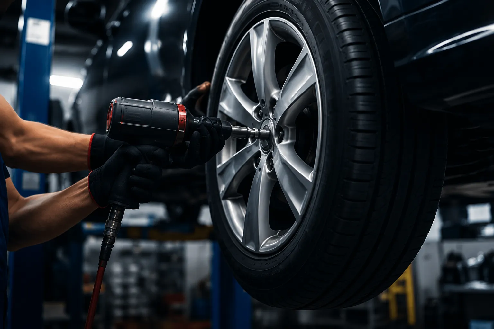
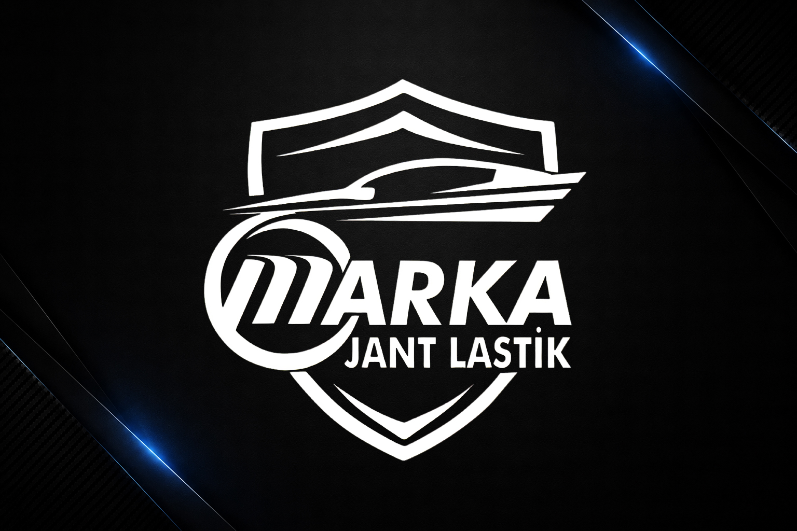

Profesyonel Ekip
Alanında deneyimli ustalarla güvenilir hizmet.
Uzman ekibimiz tarafından hızlı, güvenli ve profesyonel lastik değişimi ve montaj hizmeti sunuyoruz.


Marka Jant Lastik olarak, yaz ve kış lastiği değişiminden yeni lastik montajına kadar tüm süreçleri profesyonel ekipmanlarımız ve deneyimli ustalarımızla gerçekleştiriyoruz. Aracınızın marka ve modeline uygun lastik seçimi konusunda size rehberlik ediyor, güvenli sürüş için gerekli tüm kontrolleri eksiksiz yapıyoruz.
Lastik değişimi sırasında jantlarınızın zarar görmemesi için özel koruma aparatları kullanıyor, montaj sonrası basınç ve sızdırma testlerini uyguluyoruz. Mevsim geçişlerinde hızlı randevu imkânı sunarak bekleme sürenizi minimuma indiriyoruz.
İster tek lastik değişimi ister dörtlü set montajı olsun, her işlemde aynı kalite standartlarını uyguluyor ve işçiliğimizi garanti altına alıyoruz. Detaylı bilgi almak veya randevu oluşturmak için bizimle iletişime geçebilirsiniz.
Alanında deneyimli ustalarla güvenilir hizmet.
Son teknoloji cihazlarla hassas montaj.
Kısa sürede tamamlanan profesyonel işlem.
Yaptığımız işlemlerin arkasındayız.